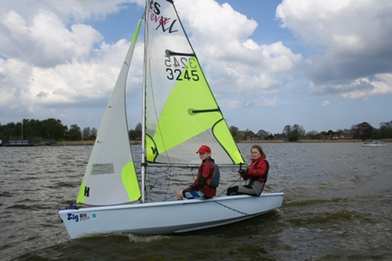
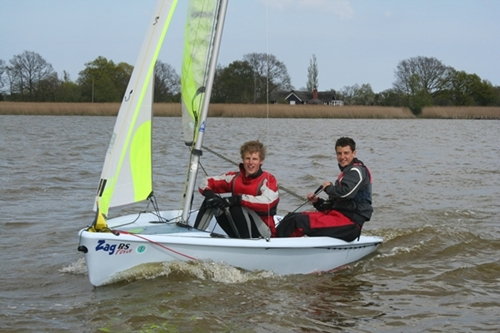
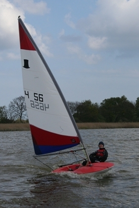
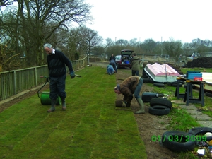
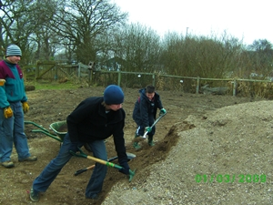
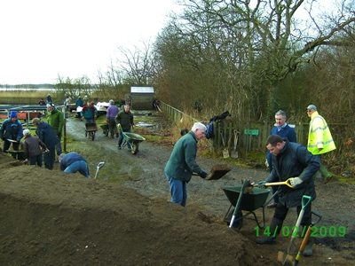
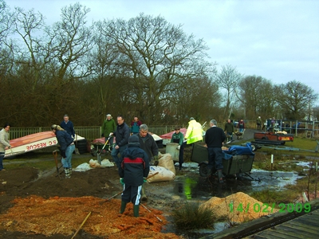
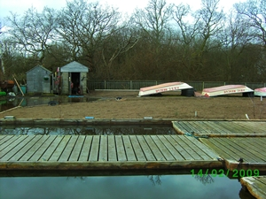

|
Pleasure Boat inn Car Park
The committee would like to remind club members that the car park of the Pleasure Boat Inn is for the use of PBI patrons and should not be used as access to the club site. please use the clubs access road.

Launch Day for Zig, Zag and Banjo Bill
The Chief Executive of the Broads Authority, Dr John Packman, presided over the official launch of our 3 brand new race specification dinghies on Saturday 25th April.
The launch was set to coincide with the first junior training day of 2009, the weather was sunny with a stiff breeze that was challenging to some of the lighter sailors but as always the juniors threw themselves into it with gusto, all 28 of them! At times they kept the rescue boats quite busy although none of the 'wetter' juniors seemed at all disheartened by the experience.
 
The New Feva's Zig and Zag Being Put Through Their Paces!

And The New Topper Banjo Bill.
A special thanks needs to go out to the members of the Youth Squad who turned up, not only to 'help' demonstrate the new boats (with big grins all round) but to also give an invaluable hand with the running of the training day. The 3 girl team of Bryony, Rosie and Rebecca excelled in giving some new junior members their first experience of being on the water by doubling up in toppers and taking them through the basics.
As mentioned elsewhere on the news page the successful grant application is primarily thanks to the hard work of Tim Percival and Tony Aldous. This has now given Terry Vincent (youth training) some excellent boats with which to further develop an already improved training program. With our support I'm sure Terry can develop 'Team Hickling' into a winning team for this years Broadland Youth Regatta.
We must also thank the members who work tirelessly in the background, people like Matt who looks after our young racers, the volunteers who man the rescue boats, Julie who together with Terry has devised the new training program and the parents that are always ready to lend a hand where ever and when ever it's needed, all of these play a crucial part in the success of our training days and in the development of our younger sailors, helping them become the HBSC youth racers of tomorrow.
Tim Whelpton Memorial Service
Olympic yachtsman, sailor and Broadland boatbuilder Tim Whelpton has died at the age of 80. A Memorial Service will be held at Upton Parish Church on Monday, June 1st at 2.30pm.
New Youth Dinghies Launch – First Junior Training Day
The two race spec RS Fevas and the race spec Topper have been rigged, marked and checked over to make sure that they are ready for the juniors to sail on launch day. As I'm sure you know these boats are as a result of a successful application to the Broad Sustainable Development fund and we have invited Dr John Packman, Chief Executive of the Broads Authority to formally hand over the boats. He is keen to see our Junior Training Programme and we look forward to showing him around the club and hope to take him for a sail on the broad.
Junior members are the life blood of our club and a lot of effort goes into planning, organising and instructing their Training Days and it would be good to see as many of them as possible taking part. Please contact Terry Vincent so that we know the numbers of juniors wanting to attend. You might be lucky enough to sail one of the new boats! Adult members offering help on the training days are also welcomed.
I hope to see you there.
Tony Aldous, Commodore
Power Boat Level 2 Training
Carl Brady has kindly agreed to deliver the 'Theory' session on Friday 3rd April at the Nancy Oldfield Trust. Start at 7:00 pm. This is open to anyone who is interested.
There will be a 'Practical' session on Saturday 9th May for all those who didn’t complete the course last year. This will include the high speed element of the course.
If you haven't done any Power Boat training and would like further information, please contact Mr Robin Slatter (number in handbook)
HBSC Broads Sustainable Development Fund
We’ve done it!
HBSC have succeeded with an application to the Broads Sustainable Development Fund (SDF). The club lodged an application in December to seek support for the clubs Youth Initiative; growing and developing our Youth Membership.
The SDF grant will enable us to purchase 2 new RS Feva XL’s (Full race rig) and one race quality new Topper.
This is a proud moment in the Club’s history, and allows us to match a quality of equipment to the quality of support our many volunteers already provide through training, coaching and encouraging our younger members to achieve for themselves and the Club.
These boats will allow those without access / ownership of a boat to compete on an even keel (or even heel!) with those that do not have ready access boats. Importantly, this equipment now enables us to bring to life more readily in areas such as boat on boat tuning.
The application process has involved many hours of discussion and labouring over a word processor to develop our business case and plans. This was followed by a period of tension greater than waiting for the wind to arrive on a Wednesday night, as we built ourselves up for the decision panel to sit in January. Unfortunately, they had to fly the postponement flag at the last minute, creating a nail biting delay of 3 weeks!
The Sustainable Development Fund have stipulated that the new dinghies should only be used by the junior members and that the club budgets to replace them within ten years.
There is now much work to do to put our plans into action – boats to buy and configure, publicity to be created, new records kept and active support of our juniors in using the craft to name but a few tasks! If you would like to help be a part of the team delivering the benefits these craft will enable, please get in touch with me as I will be project managing this, along with support of the committee.
Tim Percival
Work Party 1st March
Once again HBSC members have shown they are made of some pretty robust stuff.
Thanks to around 40 HBSC members, including some of our junior members, shifting yet more soil (40 tons!) and laying a large quantity of turf the site has been tranformed.
The Committee would also like to say 'Thank You' to the Galley staff for feeding a lot of very hungry souls who by lunchtime had worked up quite an appetite.
 
A nice piece of turf and juniors Dale and Toby shoveling under careful supervision!!
EXTRA WORK PARTY - THANK YOU
On Saturday 14th Feb a VERY large pile of soil was successfully redistributed around the club
site with the aim of raising some areas that were prone to flooding.
Thanks to nearly 40 HBSC members this was accomplished in around 4 hours, a tremendous achievement by any standards. This leaves the task of
turfing for the General Work Party on the 1st March.
If any HBSC member could spare some time to help it would be very much appreciated. Once again 'Thank You' to all that attended on Saturday.
 

Club News & Updates
If you have any comments or questions about a news story or club issue,
please email us.
|